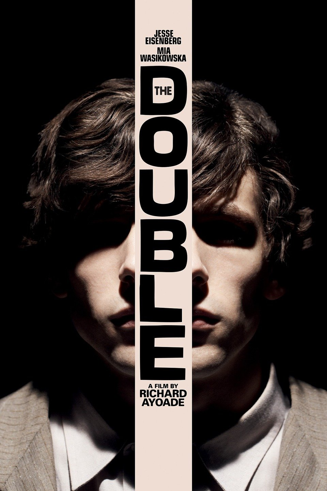

The Double
Daniel L

Going into my viewing of The Double, I tried to keep details about the film reasonably scarce, so as not to spoil it. I even refrained from watching any trailers for the film, limiting my knowledge to four descriptors of the film: a sentence-long, unspecific blurb about it following a generic Google search, its 83% critics’ approval rating on Rotten Tomatoes, Jesse Eisenberg’s starring role in the film, and its role as Richard Ayoade’s second directorial effort. What I originally thought to be the most significant background information on the film in my arsenal was my having previously seen Ayoade’s directorial debut, a teen-oriented (but not limited) comedy/drama entitled Submarine that achieved the status of an indie darling film. Less than a minute after The Double has begun, I realized that Ayoade’s prior film was not in any way a signifier of anything to be expected from this feature. Submarine was Ayoade’s attempt to break somewhat into the mainstream as he made his shift from actor/television personality to director. The Double, however, is utterly the definition of an art house film, intended to challenge the viewer (though it does still retain a sharp sense of humour that Ayoade always seems to carry with him). Even at times where the film’s action seems direct, it still forces the viewer to think and contemplate just about everything that happens—nothing is handed to you.

The film opens with Eisenberg’s (first) character, Simon James, sitting alone in a subway car. After a bit, a man without his face shown walks up to him and asserts that Simon James is sitting in his seat. At this point, Eisenberg looks around the entirely barren subway car in which he resides before opting to move rather than starting any sort of an argument. From this point on, Eisenberg only reinforces this initial characterization of Simon James. This is a man to whom no one attributes value, and who is too afraid to establish his own worth in the eyes of others; even as he tries to show his worth to others, such as his boss (played by Wallace Shawn) and his crush (played by Mia Wasikowska), in whom his interest is a desperate combination of sweet and stalkerish. In the midst of these personal issues, Simon James lives an unexciting life, exemplified by Ayoade’s own direction, especially in his cinematographic decision to use slow and tedious, but still somehow gripping, pacing to reflect the monotony of a day in the life of the average 9-to-5 worker.
He goes to work at a boring statistics-based office job, where he sits in a cubicle and wallows in the conflict between his quantitatively excellent performance and his lack of appreciation by management. He goes to visit his mother at an unsavory retirement home, where he persistently visits in spite of the conflict between his dedication for his mother and her lack of respect for him. He regularly goes to the same unimpressive diner, using the insufficient justification of "loyalty" to try and explain how he puts up with the conflict between his consistent patronage and the eatery’s unflattering treatment of and regard for our unbeloved protagonist. He even gives all his attention to the same girl, his coworker Hannah, while ignoring the conflict between her utter inattention to his existence as a whole and his fierce obsession with her, exemplified by his habits of watching her through her living room window with a telescope in his apartment and of collecting and restoring discarded scraps of her torn-apart drawings from her apartment complex’s dumpster. His love and appreciation for the world and people surrounding him is constantly juxtaposed against everyone else’s blatant disregard of his existence, shining a spotlight on a complex of his own that he describes as feeling invisible and "like Pinnochio, a wooden boy—not a real boy."

The plot of the film really kicks off when Simon James first learns of a new transfer to his office, a man named James Simon who is, in terms of physical appearance, exactly identical to him, (though, given Simon’s invisibility amongst his coworkers, no one appears to realize this fact). While the two (both played by Eisenberg) share a countenance down to the most minute features, they are, in fact, polar opposites. Contrasting against the aforementioned protagonist in Simon James, James Simon quickly proves to be brilliantly charismatic, functionally lazy, crudely promiscuous, and well-admired. It is in this dual performance that Jesse Eisenberg’s versatility and overall promise as an actor is exemplified in a way that cements him as not only a popular player in modern cinema, but a genuinely brilliant one who should not be undersold. While Simon James is reminiscent of an even more reclusive variation of either Elliot from the TV show Mr. Robot or Peter Parker from Sam Raimi’s Spider-Man trilogy (especially toward the series’s beginning), James Simon is more in line with a less intelligent, more pompous version of either Tony Stark from the first Iron Man film or even Eisenberg’s previous role as Mark Zuckerberg in the acclaimed film The Social Network. This effort by Eisenberg is essentially the equivalent of playing both Dr. Jekyll and Mr. Hyde as the sisters in The Parent Trap—and pulling it off to perfection.
When the characters first come into contact, Simon James is originally wary of his duplicate, but James Simon quickly manages to draw in our tragic protagonist with an unwavering air of charisma and likeability. However, what starts out as a fun, amicable relationship morphs into a toxic relationship, vastly at the expense of Simon James. Within not too much time at all, James Simon’s juggling of multiple hearts (including that of Simon James’s longstanding infatuation, Hannah), along with various other undedicated relationships, comes to serve as a personal attack. Furthermore, James Simon’s actions in the workplace quickly migrate from using Simon for personal gain to abusing him and deliberately exacting professional harm upon him. Where the relationship between Simon James and James Simon was originally made out to see Simon’s doppelganger come into his life to help him with his own shortcomings, we end up finding that James has only entered Simon’s life to destroy it and claim for himself the things for which Simon cares. This thickening plot ultimately culminates in an ending that is simultaneously definitive and completely subjective, splitting into two schools of thought regarding the film’s summative occurrences.

The first school of thought assumes that James Simon is a real, existent entity, who genuinely came into Simon James’s life and whose actions and interactions throughout the film really happened and concretely affected the film’s world as they were shown to do so. This first interpretation of the film establishes it as a surreal, supernatural invention, wherein the events see Simon James work through inexplicable (but still rather unquestioned) events that randomly target him, personally and unpromptedly. The greatest appeal of this interpretation is that it delivers a much happier ending for the viewer than the alternative does and somewhat detracts from the amount of thought that the viewer must put into the film and the true nature of its plot. The second (and, honestly, my preferred) school of thought, however, entices that James Simon is simply a figment of Simon James’s imagination. This interpretation of the film asserts that the film simply follows Simon James through his experiences in a state of psychosis as he tries to move through his life in spite of its obstruction on behalf of some intense hallucinations and delusions. It also largely detracts from what appears to be a happy ending by intimating it to be an illusory end to more than just the film, and requires the viewer to put a significant amount of thought into the events that (s)he has just seen pan out for about an hour and a half (a matter which attributes significantly to many people’s decision to disregard this interpretation altogether).
This particular point of view greatly intensifies my previously discussed relation of Simon James in the film to Elliot in the show Mr. Robot, though the biggest difference between the two is that this film does not in any way show how James Simon’s influence on the world could be explained by Simon James’s actual actions, assuming them to have originally been inaccurately presented. I, however, am rather fond of this ambiguity and lack of complete sensibility for either explanation, as it really cements the film as being subjective for any individual viewer. On account of this manner of execution, as much as Richard Ayoade (along with his collaborator in the writing process, Avi Korine) did a brilliant job in bringing the film to life from its origin as a Dostoyevsky novella, the movie ultimately belongs to the viewer, who gets to decide, at least for him/herself, what has happened in the picture, and what any of it actually means. Not many filmmakers could pull off such an uncertain product, but Ayoade does it better than he or anyone else should ever be able to accomplish such an unsafe gamble of a feat. On account of the elegance and mastery with which Ayoade has produced this gem, as well as the grand performance with which Jesse Eisenberg graced it, I essentially have no choice but to grace this film with two Horns Up, and an adamant recommendation of the film to anyone willing to sit down for an hour and a half and be forced to contemplate a production that is simultaneously realistically grounded and abstractly up in the air.